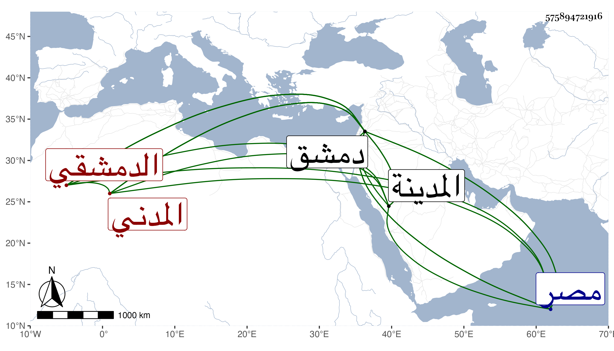

0902Sakhawi.DawLamic.ITO20230111-ara1.EIS1600.575894721916
Biography ID: 575894721916
أحمد بن الحسين بن إبراهيم محيي الدين المدني الأصل الدمشقي والد نجم الدين . ولد سنة إحدى أو اثنتين وخمسين وسبعمائة بدمشق وكان أبوه انتقل من المدينة إليها ونشأ بدمشق فطلب العلم وعني بصناعة الإنشاء وباشر التوقيع من صغره في أيام جمال الدين بن الأمير ودخل مصر بعد اللنك فباشر التوقيع أيضا ثم قدم مع شيخ ومعه صهره البدر بن مزهر وأسند وصيته إليه وصحب الفتحي فتح الله فاستكتبه أيضا في الإنشاء وعول عليه في المهمات فلما مات رجع إلى دمشق ولي بها كتابة السر في أوائل سنة ثمان عشرة وكان دينا عاقلا ساكنا منجمعا عن الناس فاضلا عفيفا كثير التلاوة متنسكا ورعا مشكور السيرة عارفا متوددا لا يكتب على شيء يخالف الشرع لكنه ينسب للتشيع . مات في صفر سنة عشرين . ذكره شيخنا في أنبائه ورأيت من أرخه نقل ذلك غلطا كالمقريزي فإنه قال في عقوده أنه مات في ثالث شعبان سنة ثمان عشرة نعم أرخه ابن قاضي شهبة في يوم الأربعاء سنة عشرين لكن خامس عشري المحرم من السنة بعد ما تعلل مدة ودفن بتربة الصوفية بدمشق عن نحو سبعين سنة وكان بسبب تجرئه ينسب إلى نففن ... ورد ما نسب إليه من التشيع وأنه كان من خيار المسلمين أهل السنة رحمه الله .
